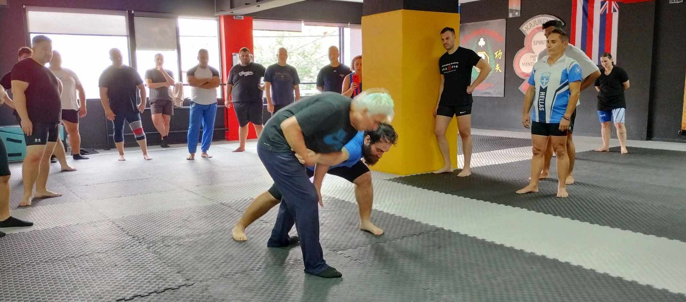

Σούμο σημαίνει κοινή κρούση, μεταφράζεται ως πάλη. Στην ουσία έχουμε αρχική σύγκρουση (μάζα επί επιτάχυνση) και έπειτα πάλη (λαβές, κλειδώματα, ρίψεις).
Το Σούμο αναφέρεται ως άθλημα, διότι αυτό ορίζει ο αθλητικός νόμος στην Ελλάδα. Ωστόσο, το Σούμο είναι η αρχαιότερη πολεμική τέχνη της Ιαπωνίας, η πιο αρχέγονη μορφή πάλης δυο ανθρώπων, οι οποίοι δεν φέρουν όπλα και μάχονται σε έναν κύκλο διαμέτρου 4.55 μέτρων. Όχι π.χ. σε ένα τατάμι 12 επί 12 μέτρων, όπως συμβαίνει σε άλλες πολεμικές τέχνες. Κατά συνέπειαν, αφορά την κοντινή ζώνη μάχης σε περιορισμένο χώρο, την κυριαρχία στον χώρο, τον έλεγχο της ισορροπίας του αντιπάλου με στόχο τη ρίψη του στο έδαφος με δυναμικό τρόπο.
Για να μιλήσουμε μια εξάσκηση σε συνθήκες βίας, η προπόνηση πρέπει να έχει χαρακτηριστικά βίας που θα συναντήσουμε. Σε μια σχολή η βία είναι ελεγχόμενη και στις παλαιστικές πολεμικές τέχνες δεν είναι ακραία ή επικίνδυνη (χτυπήματα στο κεφάλι). Τα χτυπήματα του αγωνιστικού Σούμο έχουν μόνο έναν στόχο, την διάσπαση της ισορροπίας του αντιπάλου, ώστε να οδηγηθεί στο έδαφος και να μην σηκωθεί. Άρα η βία που ασκεί ο αθλητής του Σούμο δεν οδηγεί συχνά σε ποινικές ευθύνες, όπως συμβαίνει με όλα τα υπόλοιπα μαχητικά αθλήματα. Ο νόμος στην Ελλάδα είναι πιο περίπλοκος και στηρίζεται στην αρχή της αναλογικότητας, δηλαδή αν κάποιος σου πιάσει το χέρι και σε τραβάει μπορείς να τον ρίξεις, αλλά όχι να το χτυπήσεις στο κεφάλι.
Ένα ακόμη χαρακτηριστικό που έχει το Σούμο είναι ότι ο αγώνας δεν έχει καταμέτρηση πόντων, δεν είναι παιχνίδι. Όποιος πέσει ή βγει έξω, χάνει. Αυτό συνεπάγεται αγώνες ολίγων δευτερολέπτων, ακριβώς όπως σε συνθήκες αυτοάμυνας. Δεν είναι αγώνας, είναι επιβίωση. Σε αντίθεση με τα χτυπήματα, στο Σούμο η έμφαση δίνεται στις ρίψεις, οι οποίες αποτελούν την πιο ασφαλή επιλογή για να εκτελεστεί πραγματικά μια τεχνική σε μη προβλέψιμες συνθήκες. Π.χ. η γροθιά μπορεί να μην βρει στόχο, διότι ο αντίπαλος κινείται, όμως από την στιγμή που θα πιαστεί ο αντίπαλος και δεν γνωρίζει πάλη, θα πέσει στο έδαφος και επειδή δεν γνωρίζει πως να πέσει σωστά, είναι αρκετά πιθανό να χτυπήσει από τον τρόπο με τον οποίο θα πέσει ο ίδιος.
Οι τεχνικές του Σούμο είναι απρόβλεπτες για κάποιον που δεν γνωρίζει πάλη, Τζούντο, Ζου Ζίτσου και είναι σχεδόν βέβαιον ότι θα πλήξουν τον αντίπαλο. Από τη στιγμή που θα πιαστεί ο αγκώνας, το κεφάλι, η μέση, το παντελόνι ή το μπουφάν, ο αντίπαλος θα πέσει στο τσιμέντο ή θα σπρωχτεί σε έναν τοίχο με βία και θα βρει πάλι το τσιμέντο να τον χτυπάει.
Οι αθλητές του Σούμο είναι γνωστοί για τη δύναμή τους. Όχι μόνο αναπτύσσεται στην προπόνηση, αλλά προπονούνται και με αντιστάσεις (βάρη και λάστιχα), καθιστώντας τους αποτελεσματικούς στην άσκηση βίας.
Οι αγώνες του Σούμο διδάσκουν πως η δύναμη και η τεχνική κερδίζουν. Πως ένας βαρύτερος αντίπαλος μπορεί να πέσει. Πως η μάχη είναι απρόβλεπτη και διαρκεί πολύ λίγο. Πως μπορεί να έρθει ένα χτύπημα ανά πάσα στιγμή και πως ο στόχος είναι να πέσει ο αντίπαλος. Η νοητική δύναμη και αντοχή που αναπτύσσονται από τέτοιους αγώνες καθιστούν εξαιρετικά σκληρό έναν αθλητή Σούμο, ο οποίος όχι μόνο δεν κάνει πίσω, αλλά λόγω της φύσεως του αθλήματος, πάει και κλείνει την απόσταση. Ο ασκούμενος στο Σούμο είναι αυτός που θα πέσει με ορμή πάνω στον αντίπαλο και δεν θα κάνει πίσω. Θα ηρεμήσει μόνο όταν τον σκάσει στο έδαφος.
Οι περισσότερες συμπλοκές οδηγούν σε πάλη. Στις περισσότερες πραγματικές συγκρούσεις εμφανίζονται σπρωξίματα, τραβήγματα και αρπαγές. Εκεί το Σούμο διαπρέπει, διότι ο ασκούμενος βρίσκεται ήδη στην απόσταση μάχης που γνωρίζει να διαχειρίζεται.
Στο Σούμο δεν υπάρχει πάλη εδάφους, οι αθλητές αποφεύγουν το έδαφος, όπως συμβαίνει με το αγωνιστικό Τζούντο. Αυτό είναι μειονέκτημα και πλεονέκτημα ταυτόχρονα. Ένα ποσοστό 30-50% των μαχών καταλήγουν στο έδαφος. Ο ασκούμενος του Σούμο θεωρεί πως η πτώση αντιπάλου στο έδαφος δεν αξίζει περαιτέρω κυνήγι εξουδετέρωσης. Το έδαφος σε καταστάσεις αυτοάμυνας είναι επικίνδυνο όταν οι επιτιθέμενοι είναι δυο ή περισσότεροι. Ωστόσο, θεωρώ πως ένας μαχητής πρέπει να ξέρει να κινείται στο έδαφος, για να είναι προετοιμασμένος για κάθε πιθανότητα. Παρ’ αυτά το Σούμο διδάσκει να μένεις όρθιος σε κάθε περίσταση (βασική αρχή στρατιωτικής και αστυνομικής μάχης) και αυτή είναι η σωστή νοοτροπία μάχης για αυτοάμυνα.
Οι γροθιές απαγορεύονται στο Σούμο, επιτρέπονται δε τα χτυπήματα με την παλάμη. Είναι σημαντικά πιο αποτελεσματικά στην αυτοάμυνα και ο ασκούμενος εξασκείται σε στόχους και σκληρές επιφάνειες σε κάθε προπόνηση.
Το μειονέκτημα του Σούμο είναι η απαγόρευση αρκετών χτυπημάτων με τα χέρια, τα λακτίσματα, οι αγκωνιές, οι γονατιές, αρκετές αποκρούσεις απαγορεύονται στον αγώνα, με αποτέλεσμα πολλές σχολές να μην τα διδάσκουν. Δεν μπορεί κάποιος να μιλά για αυτοάμυνα χωρίς να υπολογίζει χτυπήματα και αποκρούσεις. Η Πανελλήνια Ομοσπονδία Σούμο έχει υιοθετήσει τα εξής αγωνίσματα:
Και από τα παραπάνω προκύπτουν αγώνες πλήρους επαφής, ημι-επαφής, ελαφράς επαφής. Αυτό που βλέπουμε στα μαχητικά αθλήματα Kick Boxing και Sanda υπάρχει ως αγώνισμα στο Σούμο. Άρα η φαινομενική αδυναμία του Σούμο, όπως κάθε παλαιστικού αθλήματος καλύπτεται είτε από το Karate είτε από το Kenpo είτε από το Kajukenbo είτε από το Hapkido και βλέπουμε πως η αυτοάμυνα αποτελεί κλάδο άθλησης της ομοσπονδίας.
Μια άλλη αποτελεσματική προσέγγιση είναι κάποιος αθλητής Karate-do, Tae Kwon Do, Chap Koon Do, κτλ. να έρθει να κάνει Σούμο για να θεωρείται ικανότερος στην αντιμετώπιση της βίας και των επικινδύνων καταστάσεων.
Η φυγή είναι λύση σε τέτοιες καταστάσεις, αλλά υπάρχουν περιπτώσεις που η φυγή, η παθητικότητα, η αποκλιμάκωση δεν είναι εφικτές. Τότε χρειάζονται ικανότητες βίας για την εξασφάλιση της σωματικής ακεραιότητας. Σε μια εποχή εγκληματικότητας δεν υπάρχει άλλη λύση και όταν ο αντίπαλος ή οι αντίπαλοι είναι αποφασισμένοι να προκαλέσουν βλάβη, δεν υπάρχει άλλη λύση από το να αμυνθείς αποτελεσματικά χωρίς δειλία και χωρίς θολούρα.
Κλείνοντας, οφείλω να τονίσω πως το άρθρο αφορά την άοπλη αυτοάμυνα, διότι αν φέρεις όπλο ή ο αντίπαλος φέρει όπλο, η κατάσταση είναι τελείως διαφορετική.
Δείτε το βίντεο με το Seth. Είναι Αμερικάνος δάσκαλος που διδάσκει αμερικάνικο καράτε και παράλληλα ασκείται στο Σούμο. Μιλάει για το Σούμο σε καταστάσεις αυτοάμυνας.
